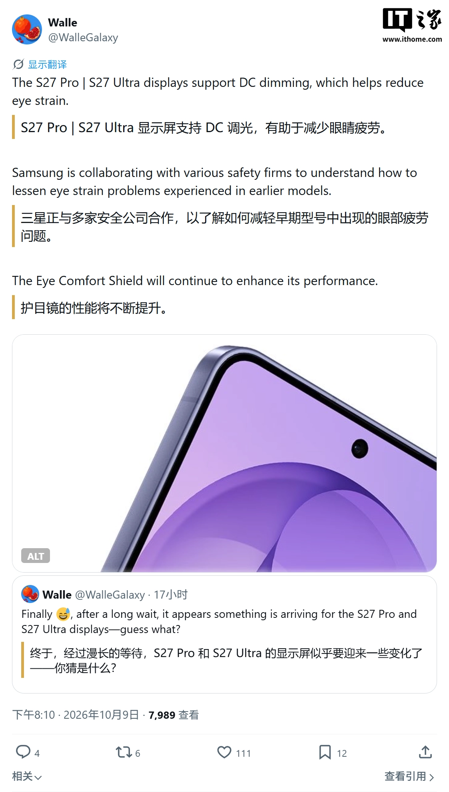
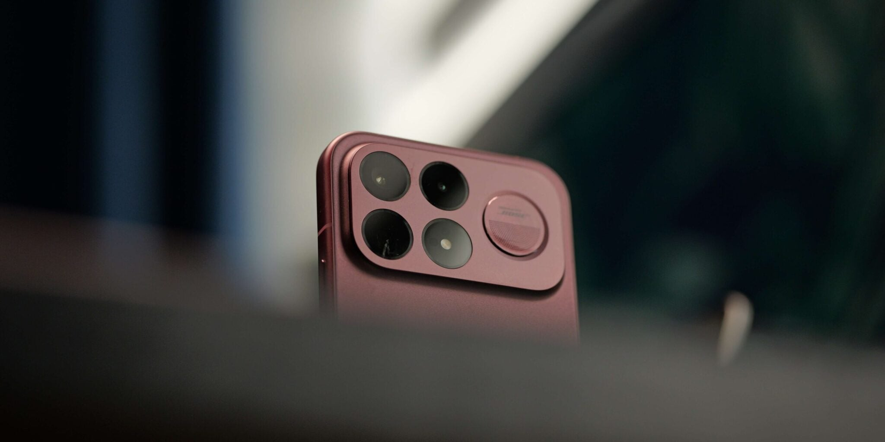
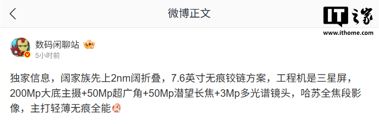
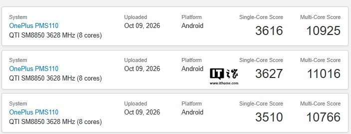
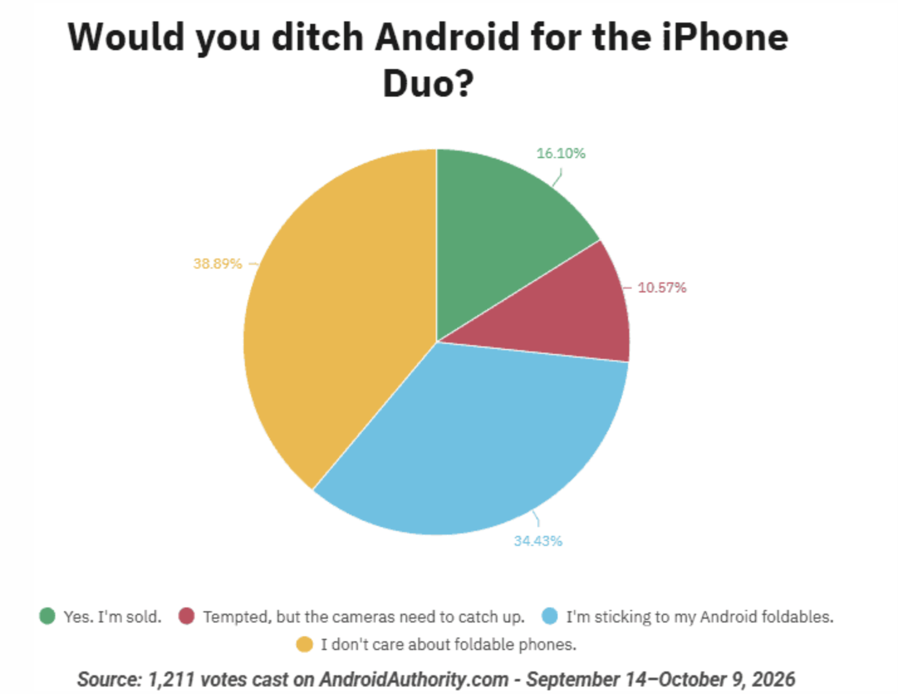
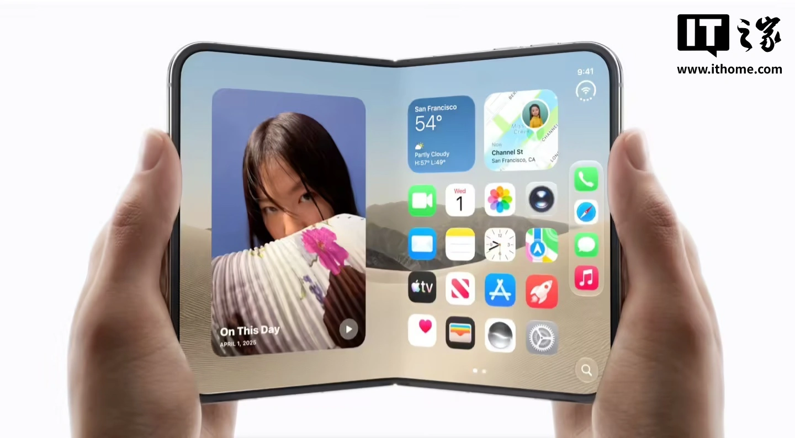
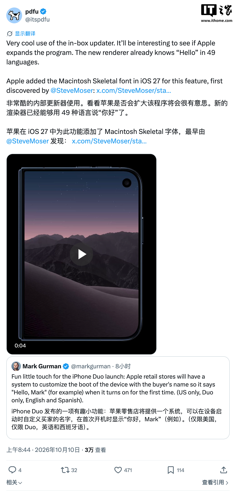
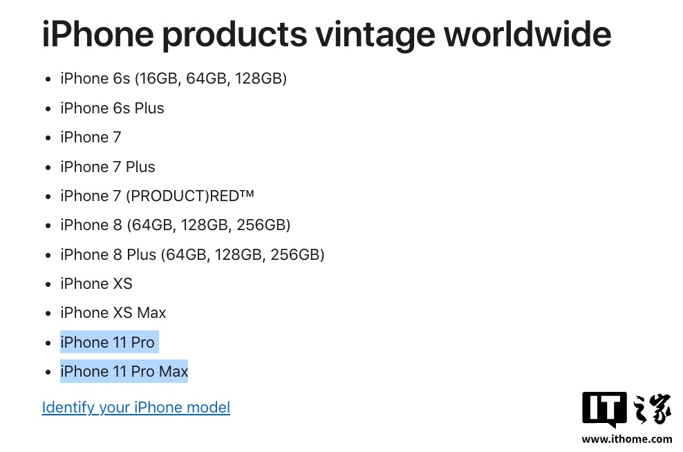
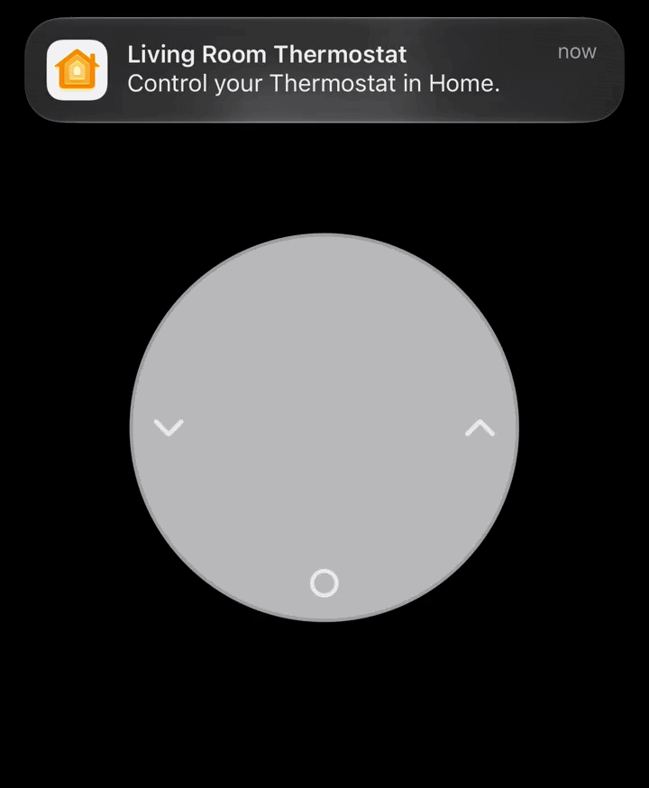

THE TECH EDIT
기술의 변화, 매일 한눈에.
카메라 · 스마트폰 · AI, 해외 테크 소식을 모아 전합니다.
최근 발행2026-10-11
새로 들어온 소식
LATEST STORIES

최신 뉴스
전체 3,589개 기사
눈의 피로를 줄여줍니다: Samsung Galaxy S27 Pro/Ultra 스마트폰 DC 디밍 지원 루머

POCO F9 Ultra 리뷰: 더 큰 숫자가 더 좋은 스마트폰을 의미할까?

오포 Find N7 유출, 사양, 200MP 쿼드 카메라, 삼성 디스플레이 탑재 전망

모 제조사의 2nm 폴더블 스마트폰 엔지니어링 샘플에 Samsung 디스플레이와 하셀블라드 전 초점 거리 이미징 시스템이 탑재될 예정이며, OPPO 산하 제품으로 예상된다.
원플러스, 오포, 리얼미 스마트폰에 ColorOS 17 오픈 베타 출시

OnePlus Ace 7 스마트폰 벤치마크 유출: Qualcomm 스냅드래곤 8 엘리트 5세대 칩, 16GB RAM

OnePlus 16 스마트폰 사양 종합: 6.78인치 바 타입, 6세대 스냅드래곤 8 슈퍼 엘리트 프로세서, 10월 12일 출시
OnePlus 16 '범인(凡人)' 애니메이션 컬래버레이션 기프트 박스 공개: 맞춤형 스마트폰 거치대, SIM 카드 트레이 핀, 보호 케이스 등 포함

iQOO Neo12 스마트폰 일부 외관 공개: 사각형 데코, 공식적으로 이번 세대부터 숫자 시리즈와 듀얼 플래그십 레이아웃 형성

Huawei Pura X View 바 타입 스마트폰, HarmonyOS 7.0.0.109 SP10 업데이트로 다중 사용자 상호 통신 공유 기능 지원

Huawei Pura X View 스마트폰 HarmonyOS 7.0.0.109 SP10 숨겨진 기능 공개, Mate 90과 동일한 게임 알림 기능 탑재
HMD Pulse 2T Pro 스마트폰 공개: MediaTek Helio G100 칩셋, 후면 스크린에 읽지 않은 메시지 표시 가능
구르만, Apple iPhone Duo 폴더블 디스플레이 스마트폰 "독점 이스터 에그" 공개: 첫 부팅 시 사용자 지정 이름 표시 가능

외신 설문조사: 소비자들은 Apple iPhone Duo가 비싸고 카메라 성능 개선의 여지가 있다고 생각한다

안드로이드 최초, 세계 두 번째 바 타입 스마트폰 출시 임박: Coolpad 신제품 최초 공개, "999위안으로 1000위안대 시장 공략"

Apple iPhone 듀얼 폴더블 디스플레이 스마트폰 주문 30% 증가, iPhone 18 Pro 시리즈 총 주문량은 변동 없어

Apple iPhone 듀오, 시작 화면에 이름 표시 및 새 글꼴 적용 가능성 유출

Apple iPhone 11 Pro/Max 스마트폰, 공식 웹사이트 '구형' 제품 목록에 추가

Apple Home 앱의 새로운 기능: iPhone을 초인종에 가까이 대면 다이내믹 아일랜드에서 영상 미리보기
Microsoft Edge 155 안정 버전 출시: AI 탭 정리 기능 강화, JPEG XL 이미지 디코딩 지원
2026년 공개된 4번째 AI 거래: Apple, 전 Google NotebookLM 팀원이 설립한 Huxe에 투자
검색 결과가 없습니다
다른 검색어를 입력하거나 필터를 초기화해 보세요.